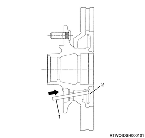

Front sensor rotor (disc brake) removal (All models)
1. Disc wheel removal
1. Remove the disc wheel from vehicle.
2. Brake caliper assembly removal
1. Remove the brake caliper assembly from the knuckle.
Note
- Remove 2 bolts from the knuckle arm rear side.
- Remove the brake caliper with the brake hose attached together with the brake support.
Caution
- By using a wire, etc., secure and hold the brake caliper to the frame, etc.
3. Hub cap removal
1. Remove the hub cap from the front hub.

4. Flange removal
Note
- The following applies to the 4WD vehicles.
1. Remove the flange from the front hub.
Note
- Remove the snap ring and shim, and then remove the flange from the front hub.
5. Lock washer removal
1. Remove the lock washer from the bearing lock nut.
6. Bearing lock nut removal
1. Remove the bearing lock nut from the knuckle using special tool.
Note
- Remove using a hub nut wrench.

SST: 5-8840-2117-0 - hub nut wrench

7. Front hub rotor assembly removal
1. Remove the front hub rotor assembly from the knuckle.
8. Sensor rotor removal
1. Remove the bolt from the front hub rotor assembly.
Note
- Remove the 2 disc rotor fastening bolts on the diagonal line.
2. Remove the sensor rotor from the front hub rotor assembly.
Note
- Insert metal rods into the 2 bolt holes after removing the bolts, and remove the sensor rotor with a hammer, etc.
- Dispose of the removed sensor rotor.

- Metal rod
- Sensor rotor
3. Install the bolt to the front hub rotor assembly.
Note
- Install the disc-rotor-fixing bolt, and tighten it to the specified torque.
Tightening torque： 103 N・m { 10.5 kgf・m / 76 lb・ft }